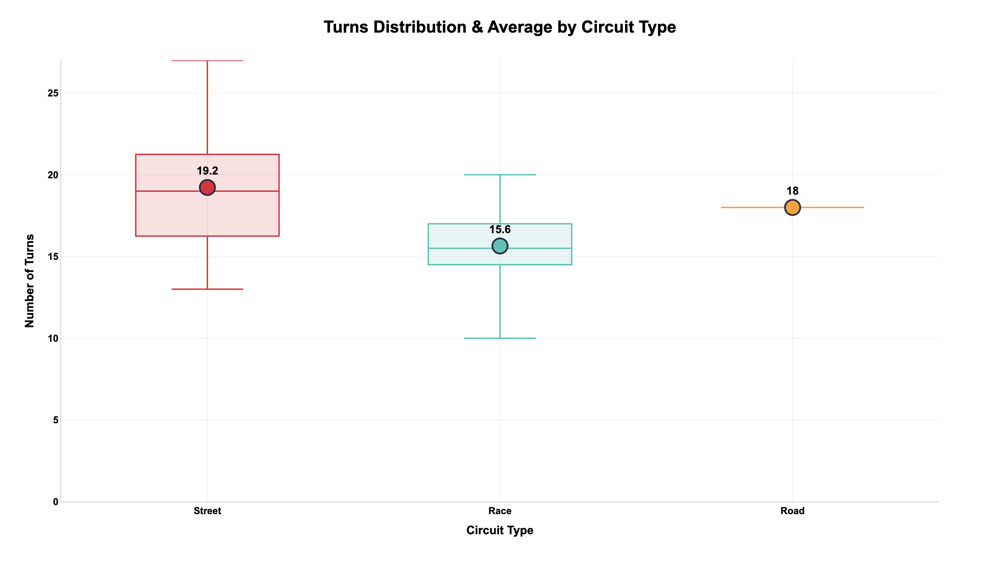
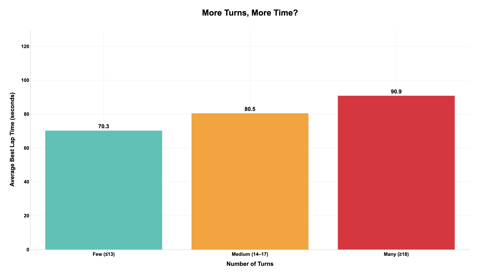
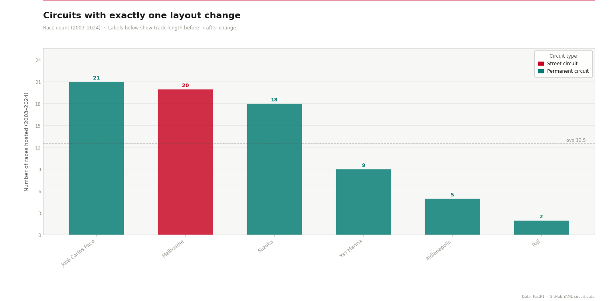
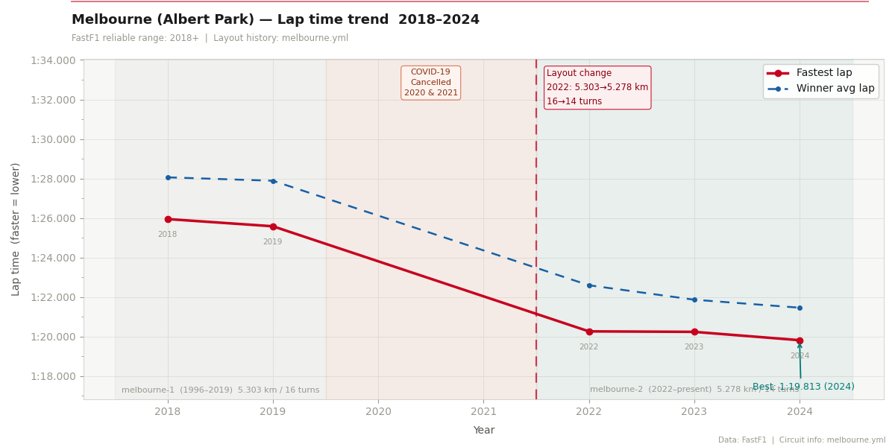

2026 Melbourne (George Russell)

Albert Park shows long full-throttle sections exceeding 300 km/h, emphasizing momentum and high-speed flow between sweeping corners.
What makes Formula 1 one of the most compelling sporting spectacles in the world? While many attribute this global obsession to high-speed engineering and driver rivalries, the true theater of the drama is the racetrack itself. This project explores the global fascination with F1 by shifting the focus entirely to circuit dynamics. Utilizing historical race data, lap-time volatility, and high-frequency sector telemetry gathered via the FastF1 API, we examine how the sheer architectural diversity and unpredictable evolution of racetracks capture the imaginations of millions of fans. Our multi-layered visual analysis demonstrates that the structural characteristics of a circuit do not merely host the race—they actively dictate the strategy, fuel the speed, and generate the edge-of-your-seat unpredictability that keeps fans fundamentally obsessed.
The Isotype chart shows how countries differ in the kinds of F1 venues they host: permanent race circuits, temporary street circuits, and road circuits. The United States leads in sheer variety with 12 distinct circuits, reflecting a strategy of rotating venues across eras rather than relying on a single flagship track.
Most countries anchor their calendars with purpose-built race circuits, providing continuity and consistent infrastructure. Street circuits remain uncommon and regionally concentrated (notably in the U.S.), while traditional motorsport nations like Italy and the United Kingdom maintain a strong presence on the calendar despite using only a few unique tracks each.

This global tour creates a beautiful duality in the motorsport ecosystem. As shown in the data, some regions like the United States capture fan excitement through vast variety, utilizing 12 entirely unique venues over time. On the other end of the spectrum, countries like Italy choose to anchor their fans' obsession in rich historical heritage. Instead of scattering races across multiple locations, Italy concentrates an incredible historical density of Grands Prix on just a few iconic, legendary asphalt strips.

The dumbbell chart compares how many distinct circuits a country has hosted against how intensively those circuits were used over time. Italy exemplifies strong venue loyalty: a high total of races concentrated across just a few physical circuits, driven largely by Monza’s recurrent role. By contrast, the United States shows high circuit turnover—many distinct venues but a lower total race count—indicating frequent rotation and shorter-lived tracks.
France shows a similar pattern of expansion exceeding sustained use, while faded entries for former hosts like Germany and Argentina underscore historical phases that no longer shape the modern calendar. These patterns highlight two strategic paths: concentrate races at a few enduring venues for legacy and continuity, or spread events across many venues to pursue growth and regional reach.

Does this structural complexity directly change the pacing of a Grand Prix? To answer this, we analyzed the direct correlation between the volume of turns and the resulting Average Best Lap Times. The data reveals a clear, progressive penalty on time as the circuit layout becomes more intricate.

As the visualization demonstrates, tracks with few corners ($\le13$) yield blistering fast laps averaging $70.3$ seconds. However, as the turn count climbs into the "Many" category ($\ge18$), the average lap time stretches significantly to $90.9$ seconds. This physical reality forces teams into a high-stakes compromise: do they setup the car for pure straight-line velocity, or maximize downforce for cornering precision? This architectural tension is exactly why every circuit tells a completely different story.
To clearly understand how a layout change affects lap times, we gathered circuits that modified their track configuration exactly once between 2003 and 2024. José Carlos Pace and Melbourne lead the group with 21 and 20 races respectively, showing that a single layout revision does not push a circuit off the calendar.

Why do track modifications create such intense anticipation among F1 fans? Racetracks are living architectures; even a minor alteration to a corner can fundamentally shift the mechanical balance and execution of speed. To explore this, we isolated iconic circuits that have undergone exactly one major layout modification in modern history, and analyzed how these structural redesigns rewrite the laws of velocity.
The prime example of this structural evolution is the Melbourne (Albert Park) Grand Prix. Prior to the 2022 race, the circuit underwent its most aggressive redesign since 1996, shortening the track length from 5.303 km to 5.278 km and deleting two entire corners (reducing the turn count from 16 to 14). By transforming slow, technical corners into a sweeping high-speed complex, the structural change triggered an immediate, historic leap in speed.

The contrast between long straights and tight corners defines each circuit's character. Below are compact telemetry snapshots from Melbourne and Miami (2026) that illustrate how layouts drive different speed and braking demands.
Albert Park shows long full-throttle sections exceeding 300 km/h, emphasizing momentum and high-speed flow between sweeping corners.

Miami highlights heavy braking zones and tight technical corners that demand rapid deceleration and precise cornering setup.
Through this multi-layered visualization project, we demonstrated that F1 track architecture directly dictates the limits of vehicular performance. From global macro trends indicating regional distributions to fine-grained telemetry tracking throttle profiles, visual analytics serves as a powerful bridge to simplify intricate motorsports telemetry data.
Moving forward, we plan to incorporate predictive machine learning frameworks (such as XGBoost or CatBoost models) to project historical lap time trajectories against newly proposed future track modifications, providing actionable analytical predictive models for track design assessments.
1. FastF1 Python library. FastF1. Accessed via the FastF1 project documentation.
2. All circuit YAML files. f1db/f1db. GitHub. https://github.com/f1db/f1db